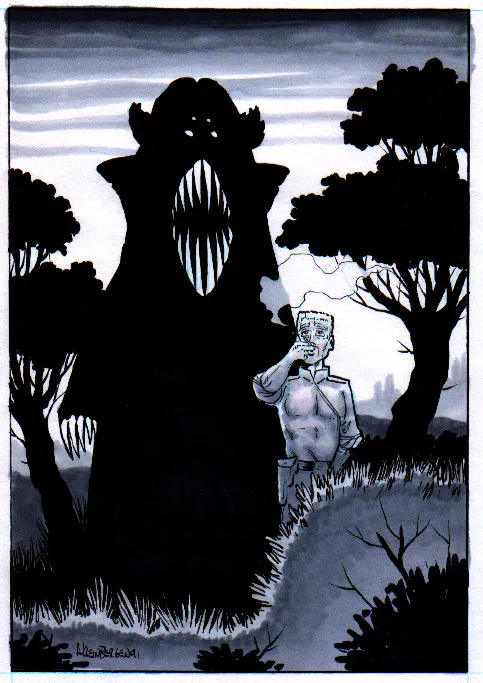

Note: When directed to read the AD
descriptions, read the damage description indicated by
the plus '➕' symbol in addition to the damage
description obtained by roll.
8 - Bladed Weapons
| % Damage |
Severity Roll |
Damage Description |
| 01-05 |
(.2,0) |
A minor bruise 4 cm. long is the result. The
affected area will be discoloured for 2:10sd days
then clear- up. No lasting effects or marks.
|
| 06-10 |
(.5,0) |
An intermediate bruise is done to the area. Minor
pain will last for 1:10sd hours and then ease.
Discoloured and stiff for 2:10sd days the area
will heal with no permanent damage.
|
| ➕ 11-15 |
(.7,0) |
A major bruise with minor blood pooling will be
present right under the impact area. A minor
bruise will spread out around the wound. The minor
bruise will clear-up in 2:10sd days without any
permanent effects. The major bruise will only ease
after 1:10sd weeks and leave a small
discolouration. Through this period the area will
be stiff.
|
| 16-20 |
(.9,1.1) |
There is a small cut about 1 cm. long that will
exhibit minor bleeding. A clot will form in about
2:10sd minutes and the wound will heal with little
or no scaring even without stitches or special
first-aid techniques.
|
| 21-25 |
(1.5,2.5) |
A cut 4 cm. long is the damage done. The
laceration doesn't penetrate all the layers
of skin, and therefore bleeds very little. Special
skin fixing techniques will be necessary to
re-align skin edges.
|
| 26-30 |
(2.0,3.7) |
The resulting cut penetrates into the flesh.
Several blood vessels have been cut and will bleed
moderately until an clot forms in 4:10sd minutes.
The cut is 6 cm. long and will ache if the area in
used or stressed in an abrupt fashion.
|
| 31-35 |
(2.7,4.7) |
A moderate cut is the result of the attack. 8 cm.
long and 2 cm. deep it will bleed severely for
3:10sd minutes and require first-aid A.S.A.P. The
body part will hurt severely for 1:10sd days.
|
| 36-40 |
(3.1,5.5) |
A severe cut is made in this body part disrupting
major veins and arteries. Over 8 cm. long and 3
cm. deep it will bleed extremely for 2:10sd rounds
then continue severely for another 6:10sd minutes.
|
| ➕ 41-45 |
(3.4,6.1) |
An extreme cut that penetrates right to the bone.
Major veins and arteries are severed. Bleeding and
pain will be extreme and lasting for 7:10sd
minutes.
|
| 46-50 |
(3.7,6.7) |
A puncture wound 4 cm. deep is made with minor
bleeding for 1:10sd minutes. Pain will be minor if
the object is left in the wound, if it is pulled
out major bleeding and severe pain, both lasting
for 2:10sd minutes, will result.
|
| 51-55 |
(4.1,7.0) |
The intermediate puncture wound that is made
bleeds intermediately and hurts majorly, with
bleeding for 2:10sd minutes, if the object is left
in. Severe pain and extreme bleeding lasting for
3:10sd minutes will result if the object is
removed.
|
| 56-60 |
(4.5,7.3) |
A severe puncture is the result to this body part.
There will be severe pain and bleeding if the
object is left in. These will both increase to
extreme if the object is removed. The wound will
bleed for 3:10sd minutes if undisturbed and 4:10sd
minutes if the object is removed.
|
| 61-65 |
(4.8,7.5) |
An extreme puncture is made in this body part.
There will extreme pain and bleeding if the
impaling object is removed. These will only be
severe if the impaling object is left in the
wound. Bleeding will continue for 4:10sd minutes
with the object in the wound and extend to 5:10sd
minutes if the object is removed.
|
| 66-70 |
(5.2,7.6) |
A small piece of skin and flesh is separated form
the body. About 2 cm. wide and 5 cm. long it is a
major bleeder and hurts intermediately. See(
FIRST-AID) for proper treatment procedure. The wound will
bleed for 5:10sd minutes if treated properly.
|
| 71-75 |
(5.7,8.1) |
A major gouge separates a chuck of tissues 4 cm.
wide and almost 10 long. The gouge is a severe
bleeder and causes extreme pain. The wound will
bleed uncontrolled for 2:10sd minutes. Then bleed
slowly for 4:10sd minutes until it stops
completely.
|
| 76-80 |
(6.2,8.4) |
A severe gouge has taken out a chunk of flesh
about 5 cm wide, 8 cm long and 6 cm deep. The
implications are severe and medical attention must
be sought to ensure survival. The depth will
effect internal organs. Bleeding will continue
unabated for 2:10sd days.
|
| ➕ 81-85 |
(6.5,8.6) |
The extreme gouge done is life-threatening due to
the large amount of tissues disrupted. About 8 cm
wide, 10 cm long and 8 cm deep it will probably
hit bones or internal organs. Bleeding will
continue until death if treatment is not obtained.
|
| 86-90 |
(6.9,8.8) |
A simple oblique fracture to the bone in this body
part is the damage done by the attack. Some
internal bleeding will occur and swelling result
but the effects of the cut will far outweigh those
of the break. The pain will be moderate for 3:10sd
hours then taper to minor for the duration of the
healing process. If no bones: read the AD
description(s)
|
| 91-95 |
(7.6,9.2) |
A compound shatter fracture is the result to the
bone in this area. Now the bone has also broken
the skin and will be adding to the blood loss from
the initial laceration. If no bones: read the AD
description(s)
|
| 96-00 |
(8.2,9.6) |
If two bones: they have both been broken in one
place and fracture is a simple one. The pain will
be severe for 3:10sd hours then taper off to
moderate for the duration of the healing process.
If one bone: it is totally shattered and will not
knit properly unless medical treatment is sought.
The pain will be extreme due to the total ripping
apart of the bone. 4:10sd hours of extreme and
2:10sd days of severe pain. If no bones: read the
AD description(s)
|
9 - Projectile Weapons
| % Damage |
Severity Roll |
Damage Description |
| 01-05 |
(.1,.2) |
A minor bruise (4 cm.) |
| ➕ 06-10 |
(.4,.8) |
A severe bruise with minor blood pooling will be
present right under the impact area. A minor
bruise will spread out around the wound. The minor
bruise will clear up in 1:10sd days without any
permanent effects. The major bruise will only ease
after 2:10sd days and leave a small
discolouration. Through this period the area will
be stiff.
|
| 11-15 |
(1.0,1.2) |
Minor jagged cut 4 cm. long. If wound is held
together with butterfly bandages the scaring the
results will be minimized. It will bleed for
1:10sd minutes then a scab will form to stop the
bleeding.
|
| 16-20 |
(1.8,1.7) |
A moderate cut with jagged edges is the damage
done to this body part. Small minor scrapes
surround the wound. Which will be stiff and hard
to move for 1:10sd days and bleed moderately for
2:10sd minutes.
|
| ➕ 21-25 |
(2.6,2.4) |
The minor puncture 2 cm. deep has effected several
minor blood vessels in this. Intermediate bleeding
and pain will accompany the puncture and last for
3:10sd minutes. The limb or body part will be
stiff and hard to move for 3:10 days.
|
| 26-30 |
(3.2,2.9) |
An intermediate puncture that severs major bloods
vessels and is 4 cm. deep is the damage done.
Moderate bleeding will be present with pain
throbbing form moderate to heavy. These will last
for 4:10sd minutes and 2:10sd hours respectively.
|
| 31-35 |
(3.6,3.4) |
A heavy puncture is done. It cuts multiple major
blood vessels causing heavy bleeding and pain
throbbing between heavy and severe. The pain will
continue for 3:10 sd hours and the bleeding will
ease in 5:10sd minutes.
|
| 36-40 |
(3.9,3.8) |
A severe puncture is the result of the attack. It
rips open a large portion of skin 8 cm. in
diametre exposing 2 cm² of internal organs or
bones. The implication are life-threatening if no
medical attention is sought.
|
| ➕ 41-45 |
(4.5,4.1) |
The projectile has gone clear through up 10 cm. of
flesh leaving a large exit hole and ripping out a
large chunk of flesh. The pain will be severe
throbbing to extreme and lasting 4:10sd minutes.
The bleeding is severe and will last for 7:10sd
minutes. If there is more than 10 cm. of flesh the
projectile is still lodged in the flesh and should
be removed.
|
| 46-50 |
(5.5,5.3) |
Minor tendon damage with heavy pain severe blood
loss. swelling will occur and the area will be
very sensitive to pressure either from use or an
accidental bump. The swelling will last 3:10sd
days while the pain will disappear in just 2:10sd
hours.
|
| 51-55 |
(5.8,5.1) |
Intermediate tendon damage and minor ligament
damage (if applicable). Again swelling in 2:10sd
minutes if untreated lasting 3:10sd hours. In this
case the swelling will be severe if untreated and
minor if treated. The pain will be much
shorter-lived then the swelling lasting about
1:10sd+5 hours.
|
| ➕ 56-60 |
(6.1,5.6) |
Severe tendon damage and heavy ligament damage is
done (if applicable)
|
| 61-65 |
(6.5,6.1) |
Simple hair-line fracture of the bone present in
this body part. The projectile skimmed off the
bone. The body part will be almost impossible to
use and give heavy pain if weight is placed on it.
The pain and swelling will subside after 1:10sd+5
and 4:10sd + 5 hours respectively. If no bones:
read the AD description(s)
|
| 66-70 |
(7.2,6.3) |
Simple oblique fracture of the bone. If weight or
pressure is placed on this body part heavy
bleeding will occur and if not treated will become
severe. This body part will swell for 4:10sd+10
hours and be extremely painful for 1:10sd+10 hrs.
If no bones: read the AD description(s)
|
| 71-75 |
(7.8,6.7) |
Simple shatter fracture, the bullet was stopped by
the bone. There will be a grinding sensation if
the body part is moved and 10% of the damage is
re-inflicted upon moving the body part. This body
part will swell for 5:10sd hours and the injured
person will experience extreme pain for 1:10sd
hrs. and swelling for 6:10sd hours. If no bones:
read the AD description(s)
|
| 76-80 |
(8.4,7.5) |
Compound oblique fracture of the bone. A major
blood vessel is severed and severe bleeding will
occur for 5:10sd minutes. Swelling will continue
for 1:10sd days and the body part(s)
|
| 81-85 |
(8.7,7.8) |
A minor compound shatter fracture of the bone. A
major blood vessel is crushed and another is
severed. Heavy bleeding present for 5:10sd
minutes. Stiffness and swelling for 1:10sd days
and severe pain for 8:10sd hours. The body parts
below the injury will suffer 1:10sd pts. of damage
for every minute that the wound is untreated and
blood flow is interrupted. If no bones: read the
AD description(s)
|
| 86-90 |
(9.2,8.0) |
A severe compound shatter fracture of the bone in
this body part. The major blood vessels in this
area have been punctured by the bone fragments.
Uncontrolled Bleeding for 1:10sd minutes. then
ease to moderate but not stop without treatment.
No weight or pressure should be placed on the body
part or extreme pain will result. The flesh below
the wound will suffer 1:10ds+5 damage pts. per
minute it is left untreated. If no bones: read the
AD description(s)
|
| 91-95 |
(9.6,8.5) |
If two bones in area: Both bones are broken roll
on table to see what kind of fracture and tissue
damage has resulted. If one bone: The bone is
shattered completely along it's length. It
cannot be used for movement at all, because no
weight can place on the bone. If no bones: read
the AD description(s)
|
| 96-00 |
(9.9,8.9) |
If three bones: All three have been broken roll on
the bone damage table to determine what kinds of
fractures and read description above. If two
bones: One is shattered the other has a fracture
roll on bone damage table. If one bone: The bone
is totally shattered even up to the joints. No way
to salvage the bone. If no bones: read the AD
description(s)
|
10 - P.P.A.
Photon and Particle Accelerators + Burning Weapons
| % Damage |
Severity Roll |
Damage Description |
| 01-05 |
(.6,0) |
Redness to skin but no penetration at all into
skin. The area will feel warn to the touch and be
sensitive to pressure for ½:10sd hours. These will
be the only effects and they are only temporary.
|
| 06-10 |
(1.1,0) |
Irritation of the skin in the effected area is
apparent by severe skin redness and minor
swelling. The area will be sensitive to pressure
and feel warn for 1:10sd hours. No permanent
effects or marks.
|
| 11-15 |
(1.9,.2) |
Severe redness and intermediate swelling. There is
a 60 percent chance of ½:10sd blisters up to 2 cm
in diametre. The skin will be extremely sensitive
to heat, cold, touch and pressure for 3:10sd
hours. The blisters will not cause scars and
therefore there are no permanent effects. Pain
will be moderate for 1:10 sd hours the taper off.
|
| ➕ 16-20 |
(2.1,.7) |
Redness will be extreme and severe swelling is
noticeable. There is an 80 percent chance of
1:10sd blisters up to 3 cm in diametre.
Sensitivity to any kind of stimulation will be
severe for 1:10sd days and minor for an additional
2:10sd days. If the blisters are lanced some
scaring may occur. Heavy pain with this burn
lasting for 2:10sd hours.
|
| 21-25 |
(2.7,1.2) |
Blisters now cover a 5 cm² area and the skin
appears wet and sticky. The blisters are filled
with fluid and can be lanced easily. If they are
lanced (see FIRST- AID)
|
| ➕ 26-30 |
(3.2,1.7) |
Blisters now cover 20 cm² of skin. The area is
covered in a thin layer of clear viscous fluid.
The severity and depth of the burn will increase
toward the centre. The same note for the blisters
as above. Extreme pain and sensitivity will last
for 3:10sd hours then reduce to heavy for 2:10sd
hours and finally to minor for 1:10sd hours.
|
| 31-35 |
(3.7,2.2) |
A small area 3 cm² will be white and chared. There
will be little or no pain form the chared area.
Bleeding will also be minimal. All the layers of
skin will be burnt away in the white area.
|
| 36-40 |
(4.1,2.6) |
The white and chared area is now 5 cm². Again the
pain and bleeding will be small in comparison to
other wounds. This is due to the cauterizing heat.
|
| ➕ 41-45 |
(4.4,3.0) |
The burn extends below the skin into the soft
tissues of this body part. These tissues were
heated so quick that they have suffered some minor
ripping. The tissues are spread away from the
impact point and have separated from the other
layers of flesh. The loose ends are now sticking
up. Bleeding is minor and lasts for ½:10sd minutes
but the pain will be light or 1:10sd minutes.
|
| 46-50 |
(4.8,3.4) |
The minor puncture 2 cm. deep has effected several
minor blood vessels in this body part. The
ripping-up of flesh is moderate and causes
intermediate bleeding and pain for 3:10sd minutes.
The limb or body part will be stiff to move for
3:10 days.
|
| 51-55 |
(5.3,3.8) |
An intermediate puncture that rips open major
bloods vessels is the damage done and is 4 cm.
deep. Moderate bleeding will be present with pain
throbbing from moderate to heavy. These will last
for 4:10sd minutes and 2:10sd hours respectively.
|
| ➕ 61-65 |
(6.4,4.8) |
A severe puncture is the result of the attack. It
rips open a large portion of skin 8 cm² in
diameter exposing 2 cm² of internal organs or
bones. The implications are life-threatening if no
medical attention is sought. Bleeding and pain
will continue for 7:10sd minutes and 5:10sd hours
respectively. Ifno bones: read the AD
description(s)
|
| 66-70 |
(6.7,5.3) |
All the tissues above the bone will now be burnt
away and the exposed surface of the bone will be
scorched. 6 cm² of the bone will be exposed. White
chared portions of flesh surround the exposed bone
to a diametre of 5 cm. If no bones: read the AD
description(s)
|
| ➕ 71-75 |
(7.1,5.7) |
15 cm² of the bone has now been exposed and at
least half of all the tissues in the body part
have been affected. The chared area is larger now
and the bone is almost pitch black. If no bones:
read the AD description(s)
|
| 76-80 |
(7.3,6.1) |
The excessive heat causes hair-line cracks in the
bone in this area. The limb is now totally useless
due to almost total muscle destruction. Moderate
bleeding will be limited to the outer surrounding
tissues. If no bones: read the AD description(s)
|
| 81-85 |
(7.9,6.6) |
The exposed bone breaks and cracks. The bone has a
compound oblique fracture and small areas of a
shatter fracture. Black fluid will ooze out of the
crack. This fluid is bone marrow that has been
cooked by the blast. If no bones: read the AD
description(s)
|
| 86-90 |
(8.3,7.1) |
A compound shatter fracture of the bone in this
body part. The major blood vessels in this area
have been punctured by the bone fragments.
Bleeding is minimal due to the heat and its
cauterizing effect. No weight or pressure can be
placed on the body part or extreme pain will
result. The flesh below the wound will suffer
1:10ds+5 damage pts. per minute it is left
untreated. If no bones: read the AD description(s)
|
| 91-95 |
(8.7,7.6) |
If two bones in area: Both bones are broken roll
on table to see what kind of fracture and tissue
damage has resulted. If one bone: The bone is
shattered completely along it's length. It
cannot be used for movement at all, because no
weight can place on the bone. If no bones: read
the AD description(s)
|
| 96-00 |
(9.2,8.2) |
If three bones: All three have been broken roll on
the bone damage table to determine what kinds of
fractures and read description above. If two
bones: One is shattered the other has a fracture
roll on bone damage table. If one bone: The bone
is totally shattered even up to the joints. No way
to salvage the bone. If no bones: read the AD
description(s)
|
11 - Bludgeoning
| % Damage |
Severity Roll |
Damage Description |
| 01-05 |
(0,0) |
A minor bruise 4 cm. long is the result. The
affected area will be discoloured for ½:10sd days
then clear- up. No lasting effects or marks.
|
| 06-10 |
(.3,0) |
The resulting scrape is minor and affects an area
of only 4 cm². The uppermost layer of skin is
affected an it is not torn or ripped merely rubbed
or scraped off. The are will appear red and be
barely painful for 1:10sd days. No lasting
effects.
|
| ➕ 11-15 |
(.8,0) |
An moderate bruise is done to the area. Minor pain
will last for 1:10sd hours and then ease.
Discoloured and stiff for 1½:10sd days, the area
will heal with no permanent damage.
|
| 16-20 |
(1.3,.1) |
The moderate scrape done to this body part is 8
cm² in area and now involves the upper three
layers of skin. These layers have all been rubbed
off in the affected area. Surrounding the wound
there is a minor scrape. A thin scab will form to
aid healing but it is very fragile. The wound will
heal in 2:10sd days. Minor pain and stiffness will
be felt.
|
| 21-25 |
(2.0,.4) |
Intermediate scraping is the damage done to this
body part. All the layers of skin are now effected
and may be rubbed off or a flap of skin may have
been pulled up. Both conditions will take 2½:10sd
days to heal and leave only the smallest scar.
|
| 26-30 |
(2.5,1.0) |
A major bruise with minor blood pooling will be
present right under the impact area. A minor
bruise will spread out around the wound. The minor
bruise will clear-up in 2:10sd days without any
permanent effects. The major bruise will only ease
after 1:10sd weeks and leave a small
discolouration. Through this period the area will
be stiff.
|
| 31-35 |
(3.1,1.6) |
A heavy bruise will present in this body part
right under the impact point of the weapon. The
injury will exhibit minor blood pooling and be
surrounded by a minor bruise. The injury will heal
in 1½:10sd days leaving no marks or scars. The
area will be stiff to move through the period of
healing.
|
| 36-40 |
(3.7,2.2) |
A severe bruise with moderate blood pooling, right
under the impact area is the damage. A medium
bruise will spread out around the wound. The
medium bruise will heal in 1:10sd days no lasting
effects. The major bruise will heal in 2:10sd days
leaving a small stain. For this period the area
will be stiff.
|
| 41-45 |
(4.2,2.8) |
An extreme bruise with life threatening
consequences is the result. If the damage is taken
in a vital area medical attention should be sought
immediately. Major internal blood fluid pooling
that is very dangerous (SEE: FIRST AID -internal
bleeding).
|
| ➕ 46-50 |
(4.7,3.4) |
Simple hair-line fracture of the bone present in
this body part. The body part will be impossible
to use and give heavy pain if weight is placed on
it. Pain and swelling will subside after 1:10sd+5
and 4:10sd+5 hours respectively. If no bones: read
the AD description(s)
|
| 51-55 |
(5.2,3.9) |
Simple transverse fracture, the force of the
impact reached the bone. This body part will swell
for 5:10sd hours and the injured person will
experience moderate pain for 1:10sd hours and
swelling for 6:10sd hours. If no bones in area:
read the AD description(s)
|
| 56-60 |
(5.8,4.3) |
Simple oblique fracture of the bone. If weight or
pressure is placed on this body part heavy
bleeding will occur and if not treated, it will
become severe. This body part will swell for
4:10sd+10 hours and be extremely painful for
1:10sd+10 hrs. If no bones: read the AD
description(s) omitting bone references.
|
| 61-65 |
(6.3,4.8) |
Simple shatter fracture, the bullet was stopped by
the bone. There will be a grinding sensation if
the body part is moved and 10% of the damage is
re-inflicted upon moving the body part. This body
part will swell for 5:10sd hours and the injured
person will experience extreme pain for 1:10sd
hrs. and swelling for 6:10sd hours. If no bones in
area: read the AD description(s) omitting the bone
references.
|
| 66-70 |
(6.8,5.3) |
Compound transverse fracture of the bone. Bleeding
from the bruise and then the puncture will be
heavy for 4:10sd minutes. Heavy swelling will last
for 2:10sd hours and the body part(s)
|
| 71-75 |
(7.2,5.9) |
Compound oblique fracture of the bone. A major
blood vessel is severed and severe bleeding will
occur for 5:10sd minutes. Swelling will continue
for 1:10sd days and the body part(s)
|
| 76-80 |
(7.6,6.3) |
A heavy compound shatter fracture of the bone. A
major blood vessel is crushed and another is
severed. Heavy bleeding present for 5:10sd
minutes. Stiffness and swelling for 1:10sd days
and severe pain for 8:10sd hours. The body parts
below the injury will suffer 1:10sd pts. of damage
for every minute that the wound is untreated and
blood flow is interrupted. If no bones: read the
AD description(s)
|
| 81-85 |
(8.0,6.7) |
A severe compound shatter fracture of the bone in
this body part. The major blood vessels in this
area have been punctured by the bone fragments.
Uncontrolled Bleeding for 1:10sd minutes. then
ease to moderate but not stop without treatment.
No weight or pressure should be placed on the body
part or extreme pain will result. The flesh below
the wound will suffer 1:10ds+5 damage pts. per
minute it is left untreated. If no bones: read the
AD description(s)
|
| 86-90 |
(8.3,7.2) |
An extreme compound shatter fracture of the bone
in this body part. All major and most secondary
blood vessels in this area have been punctured by
bone fragments. Bleeding will be uncontrollable
for 2:10sd minutes then slow to severe bleeding
until treated. No weight or pressure should be
placed on the body part or extreme pain will
result. The flesh below the wound will suffer
1:10ds+5 damage pts. per minute it is left
untreated. If no bones: read the AD description(s)
|
| 91-95 |
(8.7,7.7) |
If two bones in area: Both bones are broken roll
on table to see what kind of fracture and tissue
damage has resulted. If one bone: The bone is
shattered completely along it's length. It
cannot be used for movement. If no bones: read the
AD description(s)
|
| 96-00 |
(9.1,8.2) |
If three bones: All three have been broken roll on
the bone damage table to determine what kinds of
fractures and read description above. If two
bones: One is shattered the other has a fracture
roll on bone damage table. If one bone: The bone
is totally shattered even up to the joints. No way
to salvage the bone. If no bones: read the AD
description(s)
|
12 - Sonic Weapons
| % Damage |
Severity Roll |
Damage Description |
| 01-05 |
(.3,0) |
A min or bruise 4 cm. long is the result. The
affected area will be discoloured for ½:10sd days
then clear- up. No lasting effects or marks.
|
| 06-10 |
(.9,0) |
A moderate bruise is done to the area. Minor pain
will last for 1:10sd hours. Stiff for 1½:10sd
days, the area will heal with no permanent marks.
|
| 11-15 |
(1.4,.2) |
A major bruise with minor blood pooling will be
present right under the impact area. A minor
bruise will spread out around the wound. The minor
bruise will clear-up in 2:10sd days without any
permanent effects. The major bruise will only ease
after 1:10sd weeks and leave a small
discolouration. Through this period the area will
be stiff.
|
| 16-20 |
(2.0,.7) |
A heavy bruise will present in this body part
right under the impact point of the weapon. The
injury will exhibit minor blood pooling and be
surrounded by a minor bruise. The wound will heal
1½:10sd days leaving no visible marks or scars.
The area will be stiff to move through this period
of healing.
|
| 21-25 |
(2.6,1.1) |
A severe bruise with moderate blood pooling will
be present right under the impact area. A moderate
bruise will spread out around the wound. The minor
bruise will clear up in 1:10sd days without any
permanent effects. The major bruise will only ease
after 2:10sd days and leave a small
discolouration. Through this period the area will
be stiff.
|
| ➕ 26-30 |
(3.0,1.8) |
An extreme bruise with life threatening
consequences is the result. If the damage is taken
in a vital area medical attention should be sought
immediately. Major internal blood and vital fluid
pooling that greatly increases the chance of shock
will be present. (SEE: FIRST AID-internal
bleeding).
|
| 31-35 |
(3.4,2.3) |
The minor puncture 2 cm. deep has effected several
minor blood vessels in this body part. The
ripping-up of flesh is moderate and causes
intermediate bleeding and pain for 3:10sd minutes.
The limb or body part will be stiff to move for
3:10 days.
|
| 36-40 |
(3.9,2.8) |
An intermediate puncture that rips open major
bloods vessels and is 4 cm. deep is the damage
done. Moderate bleeding will be present with pain
throbbing from moderate to heavy. These will last
for 4:10sd minutes and 2:10sd hours respectively.
|
| ➕ 41-45 |
(4.3,3.2) |
A heavy puncture is done. The ripping is 6 cm deep
and severs multiple major blood vessels causing
heavy bleeding and pain throbbing between heavy
and severe. The pain will continue for 3:10sd
hours and the bleeding will ease in 5:10sd
minutes.
|
| 46-50 |
(4.9,3.7) |
Simple hair-line fracture of the bone present in
this body part. The projectile skimmed off the
bone. The body part will be almost impossible to
use and give heavy pain if weight is placed on it.
The pain and swelling will subside after 1:10sd+5
and 4:10sd + 5 hours respectively. If no bones:
read the AD description(s) omitting the bone
references.
|
| 51-55 |
(5.6,4.5) |
Simple transverse fracture, the force of the
impact reached the bone. This body part will swell
for 5:10sd hours and the injured person will
experience moderate pain for 1:10sd hours and
swelling for 6:10sd hours. If no bones in area:
read the AD description(s)
|
| 56-60 |
(6.0,5.1) |
Simple oblique fracture of the bone. If weight or
pressure is placed on this body part heavy
bleeding will occur and if not treated will become
severe. This body part will swell for 4:10sd+10
hours and be extremely painful for 1:10sd+10 hrs.
If no bones: read the AD description(s) omitting
bone references.
|
| 61-65 |
(6.5,5.6) |
Simple shatter fracture, the bullet was stopped by
the bone. There will be a grinding sensation if
the body part is moved and 10% of the damage is
re-inflicted upon moving the body part. This body
part will swell for 5:10sd hours and the injured
person will experience extreme pain for 1:10sd
hrs. and swelling for 6:10sd hours. If no bones in
area: read the AD description(s) omitting the bone
references.
|
| 66-70 |
(7.1,6.1) |
Compound transverse fracture of the bone. Bleeding
from the bruise and then the puncture will be
heavy for 4:10sd minutes. Heavy swelling will last
for 2:10sd hours and the body part(s)
|
| 71-75 |
(7.6,6.7) |
Compound oblique fracture of the bone. A major
blood vessel is severed and severe bleeding will
occur for 5:10sd minutes. Swelling will continue
for 1:10sd days and the body part(s)
|
| 76-80 |
(8.0,7.3) |
A heavy compound shatter fracture of the bone. A
major blood vessel is crushed and another is
severed. Heavy bleeding present for 5:10sd
minutes. Stiffness and swelling for 1:10sd days
and severe pain for 8:10sd hours. The body parts
below the injury will suffer 1:10sd pts. of damage
for every minute that the wound is untreated and
blood flow is interrupted. If no bones: read the
AD description(s) omitting the bone references.
|
| 81-85 |
(8.5,7.8) |
A severe compound shatter fracture of the bone in
this body part. The major blood vessels in this
area have been punctured by the bone fragments.
Uncontrolled Bleeding for 1:10sd minutes. then
ease to moderate but not stop without treatment.
No weight or pressure should be placed on the body
part or extreme pain will result. The flesh below
the wound will suffer 1:10ds+5 damage pts. per
minute it is left untreated. If no bones: read the
AD description(s) omitting the bone references.
|
| 86-90 |
(8.9,8.4) |
An extreme compound shatter fracture of the bone
in this body part. All major and most secondary
blood vessels in this area have been punctured by
bone fragments. Bleeding will be uncontrollable
for 2:10sd minutes then slow to severe bleeding
until treated. No weight or pressure should be
placed on the body part or extreme pain will
result. The flesh below the wound will suffer
1:10ds+5 damage pts. per minute it is left
untreated. If no bones: read the AD description(s)
omitting the bone references.
|
| 91-95 |
(9.3,8.7) |
If two bones in area: Both bones are broken roll
on table to see what kind of fracture and tissue
damage has resulted. If one bone: The bone is
shattered completely along it's length. It
cannot be used for movement at all, because no
weight can place on the bone. If no bones: read
the AD description(s) as normal but exclude any
bone references. If three
|
| 96-00 |
(9.8,9.3) |
bones: All three have been broken roll on the bone
damage table to determine what kinds of fractures
and read the description above. Two bones: One is
shattered the other has a fracture roll on bone
damage table. If one bone: The bone is totally
shattered even up to the joints. No way to salvage
the bone. If no bones: read the AD description(s)
as normal but exclude any bone references.
|
13 - Mazer Weapons
| % Damage |
Severity Roll |
Damage Description |
| 01-05 |
(0,0) |
Redness to skin but no penetration at all into
skin. The area will feel warn to the touch and be
sensitive to pressure for ½:10sd hours. These will
be the only effects and they are only temporary.
|
| 06-10 |
(.4,0) |
Irritation of the skin in the effected area is
apparent by severe skin redness and minor
swelling. The area will be sensitive to pressure
and feel warn for 1:10sd hours. No permanent
effects.
|
| ➕ 16-20 |
(1.6,0) |
Redness will be extreme and severe swelling is
noticeable. There is an 80 percent chance of
1:10sd blisters up to 3 cm in diametre.
Sensitivity to any kind of stimulation will be
severe for 1:10sd days and minor for an additional
2:10sd days. If the blisters are lanced some
scaring may occur. Heavy pain with this burn and
last for 2:10sd hours.
|
| 21-25 |
(2.0,.1) |
Major tissue disruption (bruise) with minor blood
pooling will be present in the entire effected
body part. A minor bruise will spread out around
the wound. The minor bruise will clear-up in
2:10sd days without any permanent effects. The
major bruise will heal after 1:10sd weeks leaving
a large 3 cm stain. Through this period the area
will be stiff.
|
| 26-30 |
(2.6,.2) |
A severe bruise (tissue disruption) with moderate
blood pooling will be present throughout the
entire body part. A moderate bruise will spread
out around the wound. The minor bruise will clear
up in 1:10sd days without any permanent effects.
The major bruise will heal after 2:10sd days
leaving a huge 5 cm. stain. Through this period
the area will be stiff.
|
| ➕ 31-35 |
(3.3,.8) |
An extreme bruise (tissue disruption) with life
threatening consequences. The tissues were heated
so quickly they have suffered some minor ripping.
Bleeding is minor and lasts for ½:10sd minutes and
the pain will be light for 1:10sd minutes. If the
damage is taken in a vital area medical attention
should be sought immediately. Major internal blood
and vital fluid pooling that greatly increases the
chance of shock will be present. INTERNAL BLEEDING
IS DANGEROUS (SEE: FIRST AID-internal bleeding).
|
| 36-40 |
(3.8,1.4) |
Blisters now cover a 5 cm² area and the skin
appears wet and sticky. The blisters are filled
with fluid and can be lanced easily. If they are
lanced (see FIRST- AID) for additions to
"INFECTION". These blisters will last
for 1:10sd days and be followed by peeling skin
for an additional 1:10sd days. Scaring will be
minor if the blisters are lanced and unnoticeable
if they are not. Pain will be severe for 3:10sd
hours then taper to minor for an additional 1:10sd
hours.
|
| ➕ 41-45 |
(4.2,2.0) |
Blisters now cover 20 cm² of skin. The area is
covered in a thin layer of clear viscous fluid.
The severity and depth of the burn will increase
toward the centre. The same note for the blisters
as above. Extreme pain and sensitivity will last
for 3:10sd hours then reduce to heavy for 2:10sd
hours and finally to minor for 1:10sd hours.
|
| 46-50 |
(4.7,2.6) |
The minor puncture 4 cm. deep has effected several
minor blood vessels in this body part. The
ripping-up of flesh is moderate and causes
intermediate bleeding and pain for 4:10sd minutes.
The limb or body part will be stiff to move for
4:10 days.
|
| 51-55 |
(5.2,3.1) |
An intermediate puncture that rips open major
bloods vessels and is 8 cm. deep is the damage
done. Moderate bleeding will be present with pain
throbbing from moderate to heavy. These will last
for 5:10sd minutes and 3:10sd hours respectively.
|
| 56-60 |
(5.7,3.7) |
A heavy puncture is done. The ripping is 12 cm
deep and severs multiple major blood vessels
causing heavy bleeding and pain throbbing between
heavy and severe. The pain will continue for
4:10sd hours and the bleeding will ease in 6:10sd
minutes.
|
| 61-65 |
(6.1,4.3) |
A severe puncture is the result of the attack. It
rips open a large portion of skin 16 cm² in
diametre exposing 4 cm² of internal organs or
bones. The implications are life-threatening if no
medical attention is sought. There is major
ripping-up of the tissues in and around the wound.
Bleeding and pain will continue for 8:10sd minutes
and 6:10sd hours respectively. If no bones in
area: read the AD description(s)
|
| 66-70 |
(6.7,4.9) |
All the tissues above the bone will now be burnt
away and the exposed surface of the bone will be
scorched. 12 cm² of the bone will be exposed.
White chared portions of flesh surround the
exposed bone to a diametre of 10 cm. If no bones
in area: read the AD description(s) omitting bone
references.
|
| ➕ 71-75 |
(7.4,5.5) |
30 cm² of the bone has now been exposed and at
least half of all the tissues in the body part
have been affected. The chared area is larger now
and the bone is almost pitch black. If no bones in
area: read the AD description(s) omitting bone
references.
|
| 76-80 |
(7.8,6.1) |
The excessive heat causes hair-line cracks in the
bone in this area. The limb is now totally useless
due to almost total muscle destruction. Moderate
bleeding will be limited to the outer surrounding
tissues. If no bones in area: read the AD
description(s)
|
| 81-85 |
(8.3,6.7) |
The exposed bone breaks and cracks. The bone has a
compound oblique fracture and small areas of a
shatter fracture. Black fluid will ooze out of the
crack. This fluid is bone marrow that has been
cooked by the blast. If no bones in area: read the
AD description(s) omitting the bone references.
|
| 86-90 |
(8.7,7.3) |
A compound shatter fracture of the bone in this
body part. The major blood vessels in this area
have been punctured by the bone fragments.
Bleeding is minimal due to the heat and its
cauterizing effect. No weight or pressure can be
placed on the body part or extreme pain will
result. The flesh below the wound will suffer
1:10ds+5 damage pts. per minute it is left
untreated. If no bones in area: read the AD
description(s) omitting the bone references.
|
| 91-95 |
(9.1,7.8) |
If two bones in area : Both bones are broken roll
on table to see what kind of fracture and tissue
damage has resulted. If one bone in area: The bone
is shattered completely along it's length. It
cannot be used for movement at all, because no
weight can place on the bone. If no bones in area:
read the AD description(s) omitting the bone
references.
|
| 96-00 |
(9.7,8.3) |
If three bones in area: All three have been broken
roll on the bone damage table to determine what
kinds of fractures and read description above. If
two bones in area: One is shattered the other has
a fracture roll on bone damage table. If one bone
in area: The bone is totally shattered even up to
the joints. No way to salvage the bone. If no
bones in area: read the AD description(s)
|
14 - Explosive Weapons
| % Damage |
Severity Roll |
Damage Description |
| 01-05 |
(0,0) |
An intermediate bruise is done to the area. Minor
pain will last for 1:10sd hours and then ease.
Discoloured and stiff for 2:10sd days the area
will heal with no permanent damage.
|
| 06-10 |
(0,0) |
A major bruise with minor blood pooling will be
present right under the impact area. A minor
bruise will spread out around the wound. The minor
bruise will clear-up in 2:10sd days without any
permanent effects. The major bruise will only ease
after 1:10sd weeks and leave a small
discolouration. Through this period the area will
be stiff.
|
| 11-15 |
(.5,.1) |
The resulting scrape is minor and affects an area
of only 4 cm². The uppermost layer of skin is
affected an it is not torn or ripped merely rubbed
or scraped off. The are will appear red and be
barely painful for 1:10sd days. There will be no
lasting effects.
|
| 16-20 |
(1.1,.8) |
The moderate scrape done to this body part is 8
cm² in area and now involves the upper three
layers of skin. These layers have all been rubbed
off in the affected area. Surrounding the wound
there is a minor scrape. A thin scab will form to
aid healing but it is very fragile. The wound will
heal in 2:10sd days if kept clean. Pain will be
minor an some stiffness may accompany the injury.
|
| ➕ 21-25 |
(1.8,1.5) |
Major scraping is the damage done to this body
part. All the layers of skin are now effected and
may be rubbed off or a flap of skin may have been
pulled up. Both conditions will take 2½:10sd days
to heal totally and leave only the smallest scar.
|
| 26-30 |
(2.5,2.2) |
A severe cut is made in this body part disrupting
major veins and arteries. Over 8 cm. long and 3
cm. deep it will bleed extremely for 2:10sd rounds
then continue severely for another 6:10sd minutes.
|
| ➕ 31-35 |
(3.2,2.9) |
An extreme cut that penetrates right to the bone.
Major veins and arteries are severed. The bleeding
and pain will be extreme and continue for 7:10sd
minutes. A minor gouge is done to the body part.
|
| 36-40 |
(3.9,3.6) |
A severe puncture is the result to this body part.
There will be severe pain and bleeding if the
object is left in. These will both increase to
extreme if the object is removed. The wound will
bleed for 3:10sd minutes if undisturbed and 4:10sd
minutes if the object is removed.
|
| ➕ 41-45 |
(4.6,4.3) |
An extreme puncture is made in this body part.
There will extreme pain and bleeding if the
impaling object is removed. These will only be
severe if the impaling object is left in the
wound. Bleeding will continue for 4:10sd minutes
with the object in the wound and extend to 5:10sd
minutes if the object is removed.
|
| 46-50 |
(5.2,5.0) |
Simple hair-line fracture of the bone present in
this body part. The projectile skimmed off the
bone. The body part will be almost impossible to
use and give heavy pain if weight is placed on it.
The pain and swelling will subside after 1:10sd+5
and 4:10sd + 5 hours respectively. If no bones in
area: read the ADD description(s) as normal but
exclude any bone references.
|
| 51-55 |
(5.7,5.4) |
Simple oblique fracture of the bone. If weight or
pressure is placed on this body part heavy
bleeding will occur and if not treated will become
severe. This body part will swell for 4:10sd+10
hours and be extremely painful for 1:10sd+10 hrs.
If no bones in area: read the ADD description(s)
as normal but exclude any bone references.
|
| 56-60 |
(6.3,5.9) |
Simple shatter fracture, the bullet was stopped by
the bone. There will be a grinding sensation if
the body part is moved and 10% of the damage is
re-inflicted upon moving the body part. This body
part will swell for 5:10sd hours and the injured
person will experience extreme pain for 1:10sd
hrs. and swelling for 6:10sd hours. If no bones in
area: read the ADD description(s) omitting the
bone references.
|
| 61-65 |
(6.9,6.4) |
Compound oblique fracture of the bone. A major
blood vessel is severed and severe bleeding will
occur for 5:10sd minutes. Swelling will continue
for 1:10sd days and the body part(s) below a
wounded limb will suffer 2 pts. of damage for
every minute that the wound is un-treated and
blood flow in not restored. 10% more damage is
inflicted if the part is moved. If no bones in
area: read the ADD description(s) as normal but
exclude any bone references.
|
| 66-70 |
(7.3,6.9) |
A minor compound shatter fracture of the bone. A
major blood vessel is crushed and another is
severed. Heavy bleeding present for 5:10sd
minutes. Stiffness and swelling for 1:10sd days
and severe pain for 8:10sd hours. The body parts
below the injury will suffer 1:10sd pts. of damage
for every minute that the wound is untreated and
blood flow is interrupted. If no bones in area:
read the ADD description(s) omitting the bone
references.
|
| 71-75 |
(7.8,7.3) |
A severe compound shatter fracture of the bone in
this body part. The major blood vessels in this
area have been punctured by the bone fragments.
Uncontrolled Bleeding for 1:10sd minutes. then
ease to moderate but not stop without treatment.
No weight or pressure should be placed on the body
part or extreme pain will result. The flesh below
the wound will suffer 1:10ds+5 damage pts. per
minute it is left untreated. If no bones in area:
read the ADD description(s) omitting the bone
references.
|
| 76-80 |
(8.1,7.8) |
If two bones in area: Both bones are broken roll
on table to see what kind of fracture and tissue
damage has resulted. If one bone in area: The bone
is shattered completely along it's length. It
cannot be used for movement at all, because no
weight can place on the bone. If no bones in area:
read the ADD description(s) omitting the bone
references.
|
| 81-85 |
(8.6,8.2) |
If three bones in area: All three have been broken
roll on the bone damage table to determine what
kinds of fractures and read description above. If
two bones in area: One is shattered the other has
a fracture roll on bone damage table. If one bone
in area: The bone is totally shattered even up to
the joints. No way to salvage the bone. If no
bones in area: read the ADD description(s) as
normal but exclude any bone references.
|
| 91-95 |
(9.5,9.0) |
DO ANOTHER THREE ROLLS ON THIS TABLE TO DETERMINE
THE REST OF THE DAMAGE THAT WAS INFLICTED. THIS
DAMAGE IS TO BE ASSIGNED TO AT LEAST TWO AREAS NOT
DAMAGED BY THE FIRST ROLL.
|
| 96-00 |
(9.9,9.6) |
DO ANOTHER FIVE ROLLS ON THIS TABLE TO DETERMINE
THE REST OF THE DAMAGE THAT WAS INFLICTED. THIS
DAMAGE IS TO BE ASSIGNED TO AT LEAST FOUR AREAS
NOT DAMAGED BY THE FIRST ROLL.
|
15 - Organ Damage
15.1 - Circulatory
| % Damage |
Severity Roll |
Damage Description |
| 01-25 |
(1.8,2.2) |
There are no irregularities in heart beat and no
chance of being or becoming life threatening. The
effects are numbness to major bruising, loss of
consciousness will occur if the player cannot
check Constitution with a -10% modifier.
|
| 26-50 |
(4.6,3.8) |
Some irregularities in cardio-sinus rhythm, major
blood loss. There is a -25% to Constitution and
the player must roll over or "v-fib."
will begin.
|
| 51-75 |
(6.8,5.9) |
Major irregularities in heart contractions and
pulse rate, severe loss of blood. -45% to
Constitution, if the player doesn't
successfully check "v-fib and tach.
begins". There is a 30% chance of death if no
medical is attention is recieved within the day.
|
| 76-00 |
(8.9,7.6) |
Total heart stoppage with a -75% to Constitution,
if the player fails it will take 2 - 3 tries to
restart the organ. Major damage to circulatory
system is sustained. Death is a 30% chance, if no
medical treatment is recieved, within the next
five rounds.
|
15.2 - Respiratory
| % Damage |
Severity Roll |
Damage Description |
| 01-25 |
(1.2,1.7) |
The breathing rate is un-effected and there is no
possibility of the damage becoming fatal. There
may be dizziness or numbness in the extremities.
Loss of consciousness if -10% is not successfully
checked against.
|
| 26-50 |
(3.9,2.5) |
The breathing will be laboured in the extreme with
dizziness and numbness more common if a -30%
modifier to Constitution cannot be overcome.
Breathing may slow or stop for a couple of breaths
but there is no danger of it stopping completely.
|
| 51-75 |
(6.1,4.9) |
Breathing will stop and start intermittently.
There will a -45% modifier to Constitution, if a
player cannot check breathing will be reduced to a
choking and coughing. There is a 30% chance of
death if no medical attention is recieved in the
day.
|
| 76-00 |
(7.8,6.5) |
Total breathing failure with only a 20% chance of
restart if no medical aid is recieved. Any player
with a 75% constitution or less will require
extended medical attention (10-25 rounds)
|
15.3 - Nervous / Endocrine
| % Damage |
Severity Roll |
Damage Description |
| 01-25 |
(2.2,2.7) |
There will be effects ranging from numbness and
hot and cold flashes to sharp pains,
disorientation and an overall feeling of illness.
There will be a loss of consciousness and mild
fever if a character cannot check Constitution
with a -20% modifier.
|
| 26-50 |
(5.1,4.6) |
Senses will have reduced accuracy shown in a -10%
to Perception, and the overall feeling of illness
will be greater and result in vomiting if the
player cannot check Constitution with a -30%. A
major fever will also accompany a failed check.
Death is a 30% chance per day of no medical care.
The loss in motor coordination in the effected
character will be noticeable. Agility will have a
-20% modifier and actions will require conscious
thought.
|
| 51-75 |
(7.5,6.9) |
Perception will now be modified by a -30%. Severe
illness with uncontrollable vomiting will last for
¨:10sd days then subside to a mild fever if a
Constitution check with a -40% modifier cannot be
made. There is a 60% chance of death per day that
medical care is not recieved. Major damage to the
primary tissues of this system with incredible
pains in the "brain". Agility will have
a -40% modifier to account for nervous damage.
|
| 76-00 |
(9.8,9.1) |
Perception is now modified with a -70%. Extreme
illness and uncontrollable vomiting and
unconsciousness for ½:sd days then subside to a
restless sleep for another ½:10sd days if a -70
modifier to Constitution cannot be overcome. There
is a 20% chance of death per five rounds medical
attention is not given. Extreme damage to the
primary tissues of these systems. If the affected
character doesn't receive advanced medical
treatment within the day damage to the brain will
result.
|
15.4 - Digestive / Excretory
| % Damage |
Severity Roll |
Damage Description |
| 01-25 |
(1.2,2.3) |
The major organs have only suffered minor
dis-function their will be slight nausea and some
bloating of tissues. The effects to the other
systems will be negligible and all feeling of
illness will subside in 2:10sd hours if proper
medical attention is recieved.
|
| 26-50 |
(4.6,3.8) |
Major nausea will be present with vomiting for
characters who cannot check Constitution with a
-20%. The illness will be heavy bordering on major
lasting for ½:10sd days if proper medical
attention is recieved. Severe illness with
vomiting for characters who unsuccessfully check
their Constitution with a - 40%.
|
| 51-75 |
(6.8,5.9) |
Toxicity will cause major bloating and a dis-
colouration of the skin. The illness will pass in
1:10sd days if proper medical attention is
recieved. Unconsciousness will result if character
cannot check against their Constitution with a
-50% modifier. The chance of death is 20% per day
without medical care.
|
| 76-00 |
(8.9,7.4) |
Extreme nausea and major vomiting with high fever
for all characters who cannot check Constitution
with a - 70% modifier. Unconsciousness that will
last for ½:10sd days will result if the player
cannot check with a -50% to Constitution. The
feeling of illness will pass in 1½:10sd days if
medical care is recieved. For every day left
untreated the percentage chance of death is 30%.
|
10 - Damage Procedure
First Roll
16 - Bludgenoning
| die roll |
descriptions |
severity roll |
damage percent |
| 0 or 5 |
bruised |
- |
01-25 |
| 1 or 6 |
split bruise |
- |
26-53 |
| 2 or 7 |
deep split bruise |
- |
54-78 |
| 3 or 8 |
bone damage |
2 |
79-89 |
| 4 or 9 |
internal tissue damage |
3 |
90-99 |
| 1:10sd |
Description |
| 0 or 5 |
BRUISED: The size of the wound depends on the size
of the weapon used. A single bruise will not
affect you but recieving this damage repeatedly
will slow you down. For every hit after the fifth,
their is a -5 modifier on AGILITY.
|
| 1 or 6 |
SPLIT BRUISE: A SPLIT BRUISE injury brakes the
skin. The size of the injury would be 2 to 3 cm
larger than the weapon used. This injury recieved
in the jaw or the eye is extremely painful and a
CON check is necessary. This type of wound
doesn't need any medical attention it will
heal on its own. This injury to a lightly armoured
character or one with and exoskeleton would bruise
the tissues just below the point of impact.
|
| 2 or 7 |
DEEP SPLIT BRUISE: A deep split bruise breaks the
skin and damages the tissue below. The wound is 3
to 4 cm deep and 5 to 6 cm larger then the weapon
used. Recieved in a vital area this injury will
cause severe discomfort and require a CON check.
This injury requires medical attention. This wound
to a lightly armoured or exoskeletoned area will
cause a dent or crack. The tissue under the
affected area would receive a SPLIT BRUISE.
|
| 3 or 8 |
DEEP INTERNAL DAMAGE: A D.I.D. injury crushes all
the tissues around the point of impact for 5 cm
and to a depth of 7 cm. A D.I.D. to the head will
end in unconscious to anyone with a CON less than
85. Taken to any other vital body part this injury
will cause internal bleeding and requires
immediate medical attention. CON -5 for every half
hour the character is not treated for the injury.
If the character has an exoskeleton or is lightly
armoured the damage will be reduced to a DEEP
SPLIT BRUISE.
|
| 4 or 9 |
BONE DAMAGE: This injury has caused damage to
under lying bone. Roll on BONE DAMAGE CHART. This
injury extends to 7 cm around the point of impact
and is 10 cm deep. All tissues 3 cm around the
edges affected area are crushed. This injury to
the head will result in death for anyone with a
CON less than 65 and unconsciousness for those
over 65. In both cases there is major internal
bleeding and pain. Medical attention should be
sought immediately -14 to CON for every hour the
character doesn't receive it. To a character
with light armor or an exoskeleton this injury
causes DEEP INTERNAL DAMAGE and shattered citian
or dented armour.
|
17 - P.P.A.
Photon and particle accelerators
| die roll |
descriptions |
severity roll |
damage percent |
| 0 or 5 |
burnt |
1 |
01-25 |
| 1 or 6 |
ripped open |
1 |
26-53 |
| 2 or 7 |
skin taken away |
1 |
54-78 |
| 3 or 8 |
skin+muscle taken away |
1 |
79-89 |
| 4 or 9 |
bone damage |
1 + 2 |
90-99 |
After you have received the initial damage you must
consult the burns chart and receive final damage. this
rule applies to all p.p.a. hits except #1 burnt.
| 1:10sd |
Description |
| 0 or 5 |
BURNT: this burn is a few blisters with no real
effect on exoskeleton.
|
| 1 or 6 |
RIPPED OPEN: A ripped open wound is a cauterized
aperture of the surface layers, about 2 to 4 cm
deep and 3 to 6 wide. This injury causes severe
pain. If recieving this damage in a limb it may
either be useless or be difficult to use,
depending on what race you are. Minus 10 off
agility when using that limb and perform a CON
check. to a character with an exoskeleton this
injury makes a chared crater 3 to 5 cm wide and 2
cm deep.
|
| 2 or 7 |
SURFACE LAYERS DAMAGED: This means the first
;half& cm of flesh or citian have recieved
damage. Do a burn roll for final damage. If you
receive damage 5 and up do a CON check. The size
of the damage depends on the location of the hit.
Ex. the arm or leg, but on a chest, back or vital
area the diametre would be about 5 to 10 cm.
|
| 3 or 8 |
SURFACE and LOWER TISSUE DAMAGE: This means the
first 2 to 5 cm of flesh or citian have been burnt
to the 2nd and 3rd degree.
If recieved in the head the character will pass
out if their CON is 45 or less. To a character
with light armour or an exoskeleton this will
cause surface layer damage. In either case medical
attention is required.
|
| 4 or 9 |
BONE DAMAGE: This injury is deep, about 7 cm. and
has burned the bone and caused it to crack. The
tissue surrounding the wound to 3 cm have recieved
3rd degree burns. This injury to the
upper unprotected head would result in death to
anyone below 75 in CON. This injury to a character
with light armour or an exoskeleton would result
in surface and lower tissue damage to both the
2nd and 3rd degree.
|
18 - Blade weapons
| die roll |
descriptions |
severity roll |
damage percent |
| 0 |
cut |
- |
01-13 |
| 1 |
slice |
- |
14-25 |
| 2 |
puncture cut |
- |
26-38 |
| 3 |
deep puncture |
- |
39-53 |
| 4 |
impaled |
2 |
54-68 |
| 5 |
heavy slash |
2 |
69-78 |
| 6 |
heavy hack |
2 |
79-84 |
| 7 |
slash puncture |
3 |
85-90 |
| 8 |
slash and gouge |
3 |
91-95 |
| 9 |
twist impaled |
2 + 3 |
96-99 |
| 1:10sd |
Description |
| 0 |
CUT: This injury does no damage to those races
with exoskeletons or characters with heavy
clothing or armour. If a character receives this
sort of injury the most it would do is bleed for a
while.
|
| 1 |
SLICE: A slice is a very small laceration which
will bleed for a sustained period of time and if
done to a jointed area eg. finger, back of knee or
foot it can cause tendon damage. To a character
with an exoskeleton, heavy clothing it will be
like a scrape or minor cut. Armor will only be
marked as a result of this damage.
|
| 2 |
PUNCTURE CUT: A puncture cut is a 1 - 2 cm deep
cut which will continue to unless treated. This
can remove fingers or severely hamper the use of
joints or muscle groups. To a character with an
exoskeleton it would be like a severe slice but
armour would be uneffected.
|
| 3 |
DEEP PUNCTURE: A deep puncture is a 4 cm deep slit
or hole which causes severe pain and bleeding. You
should do a CON check. This injury causes major
tissue damage that will cause loss of function in
the affected muscle group. This can disable a
joint or an entire limb. To a character with an
exoskeleton it would cause a crack 6 cm long and 2
cm deep. This injury causes severe pain but use
but use GM discretion to determine CON modifier.
|
| 4 |
IMPALED: The resulting puncture is 7 to 10 cm deep
which will bleed until the wound is medically
closed. This wound will damage any organ or bone
directly under the point of impact. If bones or
organs are present do a roll on the subsidiary
damage tables to determine the results. To a
character with an exoskeleton or very light armour
the damage would be a 3 to 5 cm deep puncture
causing severe pain, in both cases CON checks
should be done.
|
| 5 |
HEAVY SLASH: A heavy slash is a 7 to 15 cm long
cut about 2 to 4 cm deep that will bleed, cause
pain and discomfort until treated. A wound of this
sort to an arm or leg could cut it off and or make
it useless. Light armour or exoskeleton would be
cut through and the character would receive a
SLICE. Characters with an exoskeleton should check
CON.
|
| 6 |
HEAVY HACK: a Heavy hack is 7 to 10 cm long and 5
to 10 cm deep. It will bleed and cause more than
just discomfort to the affected character until
treated. If recieved in a limb it will cut it off
or render it useless. Characters with an
exoskeleton or light armour would get large crack
7 to 8 cm long and 3 cm deep. In both cases a CON
check should be done.
|
| 7 |
SLASH PUNCTURE: SEE Descriptions #3 and #5 for
damage done.
|
| 8 |
SLASH and GOUGE: SEE DESCRIPTION for the SLASH. A
gouge is just a portion of skin and flesh or
citian that has been ripped away from the
character. It will bleed until death if not
treated. A wound to an arm or leg would cut it off
or render it useless. A CON check should be done.
|
| 9 |
SLASH IMPALED: SEE Descriptions #4 and #5 for
damage done.
|
19 - Projectile weapons
| die roll |
descriptions |
severity roll |
damage percent |
| 0 or 5 |
low velocity slug |
- |
01-25 |
| 1 or 6 |
medium velocity slug |
- |
26-53 |
| 2 or 7 |
high velocity slug |
2 |
54-78 |
| 3 or 8 |
high velocity soft point |
2 |
79-89 |
| 4 or 9 |
extreme velocity hollow point or arcane |
2 + 3 |
90-99 |
Projectile damage varies due to the size of weapons and
the range. shotguns do large amounts of damage to
surface area and depending on the range can either kill
or mame.
| 1:10sd |
Description |
| 0 or 5 |
LOW VELOCITY SLUG: This round acts like it is
traveling at a relatively low velocity. The round
cause a impact cavity just 2cm larger than itself.
The injury will bleed until treated and if
received in the head kill any character with a CON
less than 45. The round will penetrate light
armour to a distance of ;half& cm and
exoskeleton to a depth of 1;half& cm.
|
| 1 or 6 |
MEDIUM VELOCITY SLUG: This round has, upon impact,
deformed to cause a large amount of tissue damage
that will bleed until treated. If received in the
head it will cause a concussion and dizziness to
any with a CON over 50, death to those under 50.
Light armour or exoskeleton will be dented or
cracked by the force.
|
| 2 or 7 |
HIGH VELOCITY SLUG: This round acts like a hard
point. If it is received in a soft area it will
penetrate 12 cm into the flesh. It will lodge in
or shatter any bone it hits. The wound will bleed
until treated. If received in the head it will
kill any character with a CON lower than 75. To a
character with light armour or an exoskeleton it
will 5 cm of tissues causing internal bleeding.
|
| 3 or 8 |
HIGH VELOCITY SOFT POINT: This round will, at
point of impact, break hard or soft tissues into
several peices causing major surface and internal
damage with heavy bleeding. If received in the
head the character will die unless their CON is
greater than 85. To a lightly armoured character
or one with an exoskeleton debris and shrapnel
will penetrate up to cm into the tissue causing
internal bleeding.
|
| 4 or 9 |
EXTREME VELOCITY HOLLOW POINT OR ARCANE: This
bullet will make an aperture 3 times larger than
the round itself. After impact the round will
flatten out and destroy the surrounding tissues.
If the area of impact is less than 65 cm in
thickness the round will produce a hole 7 times
bigger than the round itself. If received in the
head the character will die unless their CON is
over 95. To a character with light armour or a
exoskeleton it will do the same damage as a
unprotected character with a high velocity soft
point.
|
If shot by an automatic weapon the damage for all the
bullets that hit is the same. If weapon is single fire a
separate roll for each round that hits should be done.
20 - Explosive weapons
| die roll |
descriptions |
severity roll |
damage percent |
| 0 or 5 |
unconscious |
- |
01-25 |
| 1 or 6 |
unconscious,cut up |
3 |
26-53 |
| 2 or 7 |
unconscious (deep puncture) |
2 + 3 |
54-78 |
| 3 or 8 |
conscious (heavy slash,burnt) |
2 + 3 |
79-89 |
| 4 or 9 |
conscious, cut up |
2 |
90-99 |
| 1:10sd |
Description |
| 0 or 5 |
FLATENED: You have been knocked down by the
explosion. Depending on the location it can damage
either front, back or sides. It will cause
dizziness to anyone with a mental strength lower
lower than 65. In addition you must roll two
BLUDGEON damages assigned to two appropriate body
parts.
|
| 1 or 6 |
I FLATENED + LACERATIONS: You have been knocked
down by the force of the explosion. It will cause
dizziness to anyone with a mental strength lower
than 75 for 1:10sd minutes. The damage done will
be three BLUDGEON rolls and an additional HACK AND
SLASH. For every roll, roll for a location.
|
| 2 or 7 |
II FLATENED + LACERATIONS: The force of the blast
has thrown you back. If the characters mental
strength is lower than 80 he will be dizzy for
2:10sd minutes. If mental strength is lower tan 60
the character will lose consciousness for 1:10sd
minutes. The damage received is three BLUDGEON
rolls and two HACK AND SLASH.
|
| 3 or 8 |
III FLATENED + LACERATIONS: Knocked back by the
explosion the character will feel dizzy for 3:10sd
minutes if their mental strength is lower than 85.
Unconsciousness for 3:10sd minutes will result to
any character with a mental strength lower than
70. The damage is three BLUDGEON rolls and three
HACK AND SLASH rolls. If the explosion is a
fragmentation do an extra HACK AND SLASH to
another area.
|
| 4 or 9 |
IV FLATENED + LACERATIONS: The force of the blast
will result in dizziness for 4:10sd minutes if the
character's mental strength is less than 95.
A mental strength less than 80 will cause
unconscious for 4:10sd minutes. The damage
received is three BLUDGEON rolls and FOUR HACK AND
SLASH rolls.If the explosion is a fragmentation do
an extra HACK AND SLASH to another area.
|
For each new roll what ever it may be its damage should
be allocated by another roll on the D.A.I.s.
21 - Incendiary, mazer and sonic weapons
| die roll |
descriptions |
severity roll |
damage percent |
| 0 or 5 |
surface skin damage |
- |
01-25 |
| 1 or 6 |
surface muscle damage |
- |
26-53 |
| 2 or 7 |
deep tissue damage |
3 |
54-78 |
| 3 or 8 |
surface tissue splitting |
- |
79-89 |
| 4 or 9 |
deep tissue splitting |
2 + 3 |
90-99 |
| 1:10sd |
Description |
| 0 or 5 |
Surface Skin Damage: The injury recieved is 0.5 cm
deep and in addition you must do a burn severity
roll. If recieved in the head and the burn damage
is 4 and up the character will feel dizzy if their
CON is lower than 65 for 2:10sd min. If recieved
in an area where the skin is thin eg. a hand the
body part becomes stunned for 1st degree 1:10sd,
2nd degree 1;half&:10sd, and 3rd degree 2:10sd
min. Note: P.C. with an exoskeleton will only
receive a 1st degree burn to the tissue below with
no effect to the surface.
|
| 1 or 6 |
Surface Muscle Damage: The injury recieved is 1 to
2 cm deep and 5 to 10 cm wide. Do a burn severity
roll. If recieved in the head and the damage is
between 0 and 7 the character will be dizzy for
3:10sd min. if the CON is lower than 70. If If
above 7 the character will become unconscious for
3:10sd min. If recieved where skin is thin eg. the
hand, and the damage is 0 to 7 the body part will
be stunned for 3:10sd min. If 7 and up the hand is
useless until proper medical attention is
recieved. Note: P.C. with an exoskeleton will only
receive a 2nd degree burn to the tissue below with
no effect to the surface.
|
| 2 or 7 |
Deep Tissue Damage: This injury is 2 to 5 cm deep
and 5 to 10 wide. This is a 3rd degree burn and if
recieved to the head the character will dire if
thier CON is lower than 50. If the characters CON
is under 65 they will fall into unconsciousness
for 3:10sd min. Note: P.C. with an exoskeleton
will only receive a 3rd degree burn to the tissue
below and the exoskeleton to split and shear.
|
| 3 or 8 |
Surface Tissue Splitting: The mazer has caused the
skin to explode. It is 1 to 2 cm deep and 5 to
10cm wide. This injury if recieved to the head
will destroy the surrounding skin and cause the
skull to fracture (hair line) the character will
be rendered unconscious for 3:10sd min. if the
characters' CON is lower than 65. This injury
causes sever bleeding and pain and when recieved
by a character with an exoskeleton the damage will
remain constant but the area effected will have
the exoskeleton blown off.
|
| 4 or 9 |
Deep tissue Damage: The mazer has penetrated deep
into the tissues, approximately 10cm, the muscle
and tissues in this area have been exploded. When
taken to the head by any character with a CON
below 65 it will cause death and below 70, comma
lasting for 4:10d hours if no medical attention is
applied, and with attention 2:10ds hours. When
consciousness returns partial memory loss is a
distinct possibility lasting only a few days.
Note: to a character with an exoskeleton the
damage is the same as above but 10 to 20 cmý of
the exoskeleton will be blown off.
|
Remember Mazers, micro waves, heat up the water inside
the tissues. To characters wearing metal armour the
waves will bounce off and cause sparks. Sonics, sound
waves, will cause the tissue to heat up or the tissue to
fall off in small chunks.
Second Roll
Some of the first damage rolls require further damage
rolls because if you receive a burn the severity must be
determined. if a bone is broken the type of break must
be determined.
22.1 - Burns
| die roll |
descriptions |
damage percent |
| 0 or 5 |
1st degree |
+3 |
| 1 or 6 |
1st degree |
+7 |
| 2 or 7 |
2nd degree |
+12 |
| 3 or 8 |
2nd degree |
+21 |
| 4 or 9 |
3rd degree |
+32 |
22.2 - Bone damage
| die roll |
descriptions |
damage percent |
| 0or5 |
simple split (hair-line) |
+3 |
| 1or6 |
simple break (skin intact) |
+7 |
| 2or7 |
simple shatter (skin intact) |
+12 |
| 3or8 |
compound break (bone exposed) |
+21 |
| 4or9 |
compound shatter (severe tissues damage) |
+32 |
22.3 - Internal damage
| die roll |
descriptions - (depends on area hit) |
|
| 0 or 5 |
major organ damage |
|
| 1 or 6 |
severe organ damage |
|
| 2 or 7 |
1organ system failure |
|
| 3 or 8 |
2organ system effected |
|
| 4 or 9 |
2organ system failures |
|
Third Roll
If a wound is left untreated in due time the wound will
become infected the type of this infection is determined
with the 3 rd or result roll.
23 - Infection roll
| die roll |
descriptions |
| 0 or 5 |
bacterial |
| 1 or 6 |
viral |
| 2 or 7 |
mineral |
| 3 or 8 |
chemical |
| 4 or 9 |
animal |
